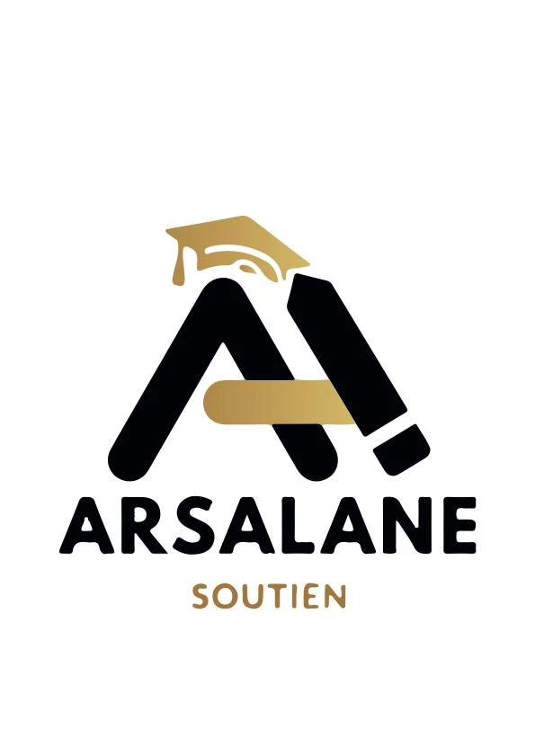
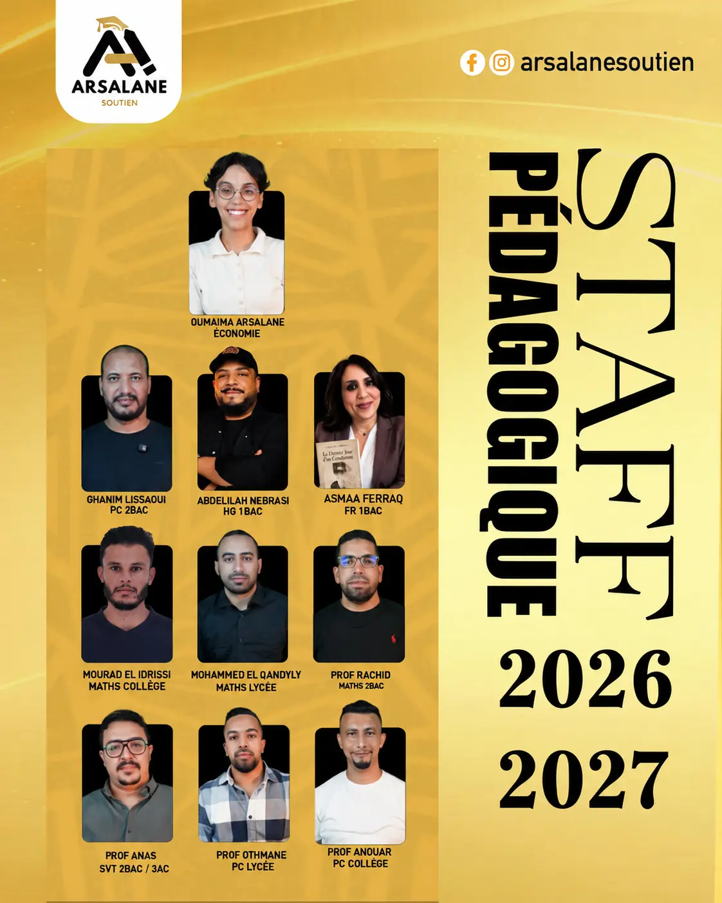

05 · 06
Primaire
5e et 6e année. Les bases, la lecture des consignes et les premières méthodes de travail.
Un accompagnement scolaire structuré, du 5e année primaire jusqu'au baccalauréat, à Hay Al Matar.

Le centre
Arsalane Soutien accompagne les élèves dans leur progression scolaire à El Jadida, du primaire au lycée.
Les élèves sont réunis en petits groupes de niveau, pour que chacun soit réellement suivi pendant la séance. Le travail s'organise sur toute l'année, à un rythme régulier.
Les progrès comme les difficultés sont partagés avec les parents : l'accompagnement du centre prolonge celui de la maison.
Niveaux
5e et 6e année. Les bases, la lecture des consignes et les premières méthodes de travail.
De la 1re à la 3e année. Consolidation des acquis dans les matières principales.
Du tronc commun à la 2e année du baccalauréat, avec un travail régulier jusqu'aux épreuves.
Mathématiques · Physique-chimie · SVT · Français · Arabe · Histoire-géographie · Économie
Emploi du temps
Les emplois du temps actuels sont présentés par niveau. Ouvrez une fiche pour la consulter en grand format.

Nos espaces


L'approche
Un accompagnement adapté à chaque niveau scolaire.
Un environnement calme, entièrement consacré au travail.
Une équipe de professeurs présente auprès des élèves.
L'équipe
Un professeur par matière, du collège au baccalauréat.

Contact
Le centre se trouve à Hay Al Matar, en face de l'école Al Balsam, à El Jadida.